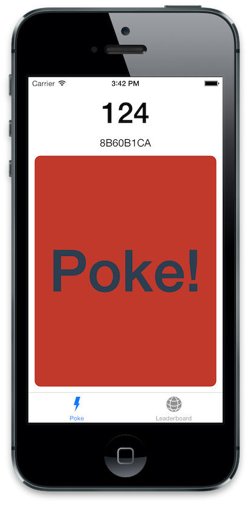
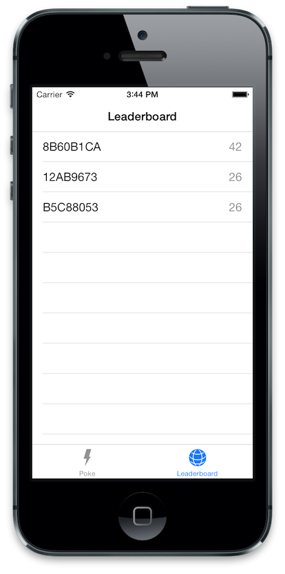
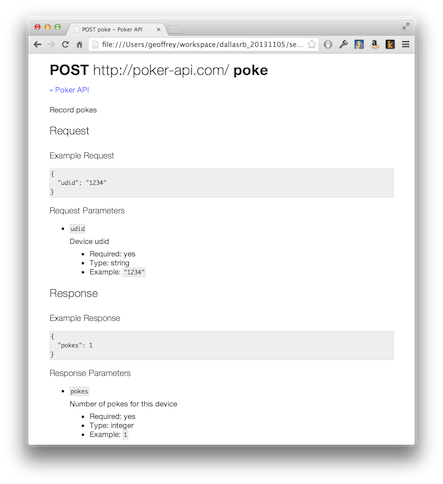
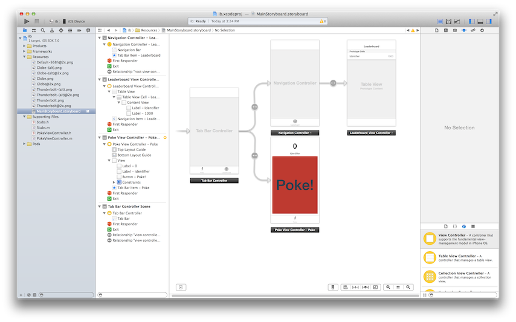
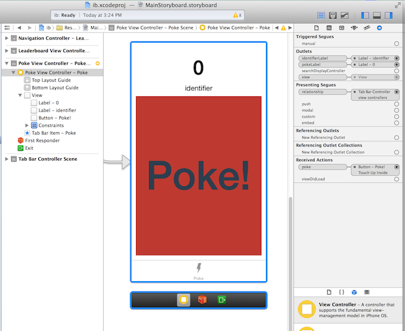

Mobile Omakase
Look At All The Sushi I Am Not Eating
Who Am I?
Geoffrey Dagley
Where Am I?
- @gdagley
-
 @gdagley
@gdagley -
 @gdagley
@gdagley - geoffreydagley.com
What Have I Done?
-
 Dallas Ruby 2006?
Dallas Ruby 2006?
What Am I Doing?
Rails, RubyMotion, Android
RubyMotion, Grape
RubyMotion
What Are We Building?

What is Grape?
Grape is a REST-like API micro-framework for Ruby
class Foo < Grape::API
format :json
resource :foo do
# GET /foo/bar
desc "Return a public timeline."
get :bar do
#do something
end
end
endWhy not...
Putting It Together
$ ls -l
-rw-r--r-- 1 geoffrey staff 303 Oct 22 13:55 Gemfile
-rw-r--r-- 1 geoffrey staff 156 Oct 22 13:40 config.ru
-rw-r--r-- 1 geoffrey staff 387 Oct 22 16:43 poker.rb
$ more Gemfile
source 'https://rubygems.org'
ruby '2.0.0'
gem 'grape'
$ more config.ru
ENV['RACK_ENV'] ||= 'development'
require 'rubygems'
require 'bundler/setup'
Bundler.require :default, ENV['RACK_ENV']
require './poker'
run Poker::API
The API
# poker.rb
require './leaderboard'
module Poker
class API < Grape::API
format :json
get :leaderboard do
present :leaders => Leaderboard.leaders
end
post :poke do
error!({:error => 'Not identified'}, 500) unless params[:udid]
member = params[:udid]
Leaderboard.increment(member)
present({:pokes => Leaderboard.score_for(member)})
end
end
endLook at Grape::API (similar to ActionController). Look at format :json. Look at present. Look at error!()
Adding Specs
$ ls -l
-rw-r--r-- 1 geoffrey staff 303 Oct 22 13:55 Gemfile
-rw-r--r-- 1 geoffrey staff 156 Oct 22 13:40 config.ru
-rw-r--r-- 1 geoffrey staff 387 Oct 31 22:39 poker.rb
-rw-r--r-- 1 geoffrey staff 924 Oct 22 16:57 poker_spec.rb
-rw-r--r-- 1 geoffrey staff 653 Oct 31 22:53 spec_helper.rb
$ more Gemfile
source 'https://rubygems.org'
ruby '2.0.0'
gem 'grape'
group :test do
gem 'rspec'
gem 'rack-test'
gem 'json_spec'
end
The Helper
# spec_helper.rb
ENV["RACK_ENV"] ||= 'test'
require 'rubygems'
require 'bundler/setup'
Bundler.require :default, ENV['RACK_ENV']
require './poker'
RSpec.configure do |config|
config.include Rack::Test::Methods
config.include JsonSpec::Helpers
config.mock_with :rspec
config.expect_with :rspec
config.before(:each) do
JsonSpec.reset
end
endThe Specs
require './spec_helper'
describe Poker::API do
def app
@app ||= Poker::API.new
end
before do
Leaderboard.reset
end
describe 'GET /leaderboard' do
it 'should return an array of udid and scores' do
Leaderboard.rank('6789', 1)
Leaderboard.rank('9876', 2)
get '/leaderboard'
leaders = parse_json(last_response.body, 'leaders')
leaders.first.should == ['9876', 2]
end
end
endRunning The Specs
$ bundle exec rspec poker_spec.rb
.
Finished in 0.03882 seconds
1 example, 0 failures
Adding API Documentation and Validation

fdoc is short for Farnsdocs, named for everybody's favorite, good news-bearing, crotchety old man, Professor Farnsworth.
Configuring RSpec and fdoc
$ more Gemfile
source 'https://rubygems.org'
ruby '2.0.0'
gem 'grape'
...
group :development, :test do
gem 'fdoc', :git => 'git@github.com:square/fdoc.git'
gem 'json-schema', '< 2.0.0' # temporarily avoid change in json-schema require syntax
end
$ more spec_helper.rb
ENV["RACK_ENV"] ||= 'test'
require 'rubygems'
require 'bundler/setup'
Bundler.require :default, ENV['RACK_ENV']
require './poker'
require 'fdoc/spec_watcher'
Fdoc.service_path = File.expand_path(File.dirname(__FILE__) + "/fdoc")
Fdoc.decide_success_with do |response, status|
status.to_i < 400
end
RSpec.configure do |config|
config.include Rack::Test::Methods
config.include JsonSpec::Helpers
config.include Fdoc::SpecWatcher
...
end
Chicken or the Egg?
# poker_spec.rb
require './spec_helper'
describe Poker::API do
...
describe 'POST /poke', :fdoc => 'poke' do
...
end
...
end- Should we generate our fdocs by hand based on our knowledge of the API requests and responses?
- OR
- Should we allow fdoc to scaffold the initial fdocs based on the specs?
Scaffolding fdoc
$ FDOC_SCAFFOLD=true rspec poker_spec.rb
....
Finished in 0.09356 seconds
4 examples, 0 failures
$ ls -l fdoc/
-rw-r--r-- 1 geoffrey staff 45 Nov 1 14:30 ???.fdoc.service
-rw-r--r-- 1 geoffrey staff 393 Nov 1 14:30 poke-POST.fdoc
Filling in the Details
# fdoc/poke-POST.fdoc
---
description: Record pokes
responseCodes:
- status: 500
successful: false
description: "Not identified"
- status: 201
successful: true
description: "Poke recorded"
requestParameters:
properties:
udid:
description: "Device udid"
required: true
type: string
example: '1234'
responseParameters:
properties:
pokes:
description: "Number of pokes for this device"
required: true
type: integer
example: 1Generating Documentation and Running Specs
$ fdoc convert ./fdoc -o doc
Converting fdoc to html
using ./fdoc
inside /Users/geoffrey/workspace/dallasrb_20131105/server/doc
create styles.css
create index.html
create poke-POST.html
$ open doc/index.html
$ rspec poker_spec.rb
....
Finished in 0.09356 seconds
4 examples, 0 failures
What Else Can We Do?
Databases
- (MySQL, Postgres) via ActiveRecord (or others)
- Memcache, Redis, etc
Rack Middleware
app = Rack::Builder.new do
map '/api' { run Poker::API }
map '/' { run Vienna }
end
use ActiveRecord::ConnectionAdapters::ConnectionManagement
use Airbrake::Rack
use Rack::Printout
run appRake, Guard, etc.
What is RubyMotion?
"RubyMotion is a revolutionary toolchain that lets you quickly develop and test native iOS and OS X applications for iPhone, iPad and Mac, all using the awesome Ruby language you know and love." - rubymotion.com
Ceremony vs Essence
"code that is unrelated to the task at hand. This code is immediate deadweight, and often vastly outweighs the code that is actually getting work done. Many forms of ceremony come from unnecessary special cases or limitations at the language level" - Stuart Halloway - Ending Legacy Code In Our Lifetime
What RubyMotion is NOT
- Not free ($199/year)
- Not open source, but parts of the tool chain are.
- Not cross-platform. iOS and OS X only
- Not replacement for understanding iOS SDK, MVC, etc.
Obj-C Ceremony
// PokeViewController.h
#import <UIKit/UIKit.h>
@interface PokeViewController : UIViewController
@property IBOutlet UILabel* pokeLabel;
@property IBOutlet UILabel* identifierLabel;
-(IBAction) poke;
@end
// PokeViewController.m
#import "PokeViewController.h"
@interface PokeViewController ()
@end
@implementation PokeViewController
- (void)viewDidLoad
{
// Do something
}
- (void) poke
{
// Do something
}
@endRuby Essence
class PokeViewController < UIViewController
extend IB
outlet :pokeLabel
outlet :identifierLabel
def viewDidLoad
# do something
end
def poke
# do something
end
endCreate Project
$ motion create PokeR
Create PokeR
Create PokeR/.gitignore
Create PokeR/app/app_delegate.rb
Create PokeR/Gemfile
Create PokeR/Rakefile
Create PokeR/resources/Default-568h@2x.png
Create PokeR/spec/main_spec.rb
Build the UI
$ more Gemfile
source 'https://rubygems.org'
gem 'rake'
gem 'ib'
$ rake ib:open
Create the storyboard 
Add Some ViewController Classes
# app/poke_view_controller.rb
class PokeViewController < UIViewController
extend IB
outlet :pokeLabel
outlet :identifierLabel
def viewDidLoad
end
def poke
end
end
# app/leaderboard_view_controller.rb
class LeaderboardViewController < UITableViewController
def viewDidLoad
end
def viewDidAppear(animated)
end
def tableView(tableView, numberOfRowsInSection:section)
0 # need to replace with actual number of leaders
end
def tableView(tableView, cellForRowAtIndexPath:indexPath)
# need a cell here
end
endHook up the UI
$ rake ib:open

Getting Storyboards working in RubyMotion
# Rakefile
# -*- coding: utf-8 -*-
$:.unshift("/Library/RubyMotion/lib")
require 'motion/project/template/ios'
begin
require 'bundler'
Bundler.require
rescue LoadError
end
Motion::Project::App.setup do |app|
# Use `rake config' to see complete project settings.
app.name = 'PokeR'
app.info_plist['UIMainStoryboardFile'] = 'MainStoryboard'
end
# app/app_delegate.rb
class AppDelegate
def application(application, didFinishLaunchingWithOptions:launchOptions)
true
end
def window
@window
end
def setWindow(window)
@window = window
end
endAdding functionality with BubbleWrap
"Cocoa wrappers and helpers for RubyMotion (Ruby for iOS) - Making Cocoa APIs more Ruby like, one API at a time." - https://github.com/rubymotion/BubbleWrap
# Gemfile
gem 'bubble-wrap'
# app/poke_view_controller.rb
class PokeViewController < UIViewController
extend IB
outlet :pokeLabel
outlet :identifierLabel
def viewDidLoad
pokeLabel.text = User.pokes.to_s
identifierLabel.text = User.displayIdentifier
end
def poke
data = {:udid => User.identifier}
BW::HTTP.post("http://localhost:9292/poke", {payload: data}) do |response|
if response.ok?
json = BW::JSON.parse(response.body.to_str)
User.pokes = json['pokes']
pokeLabel.text = User.pokes.to_s
else
App.alert(response.error_message)
end
end
end
endUsing Existing Obj-C Libraries with Cocoapods
# Gemfile
gem 'motion-cocoapods'
# Rakefile
Motion::Project::App.setup do |app|
...
app.pods do
pod 'SVProgressHUD'
end
end
# app/leaderboard_view_controller.rb
class LeaderboardViewController < UITableViewController
attr_accessor :leaders
def viewDidAppear(animated)
SVProgressHUD.showWithStatus('Loading...', maskType:SVProgressHUDMaskTypeClear)
BW::HTTP.get("http://localhost:9292/leaderboard") do |response|
SVProgressHUD.dismiss
if response.ok?
json = BW::JSON.parse(response.body.to_str)
self.leaders = json['leaders']
else
App.alert(response.error_message)
end
end
end
endWhat Else Can We Do?
- Build UI programmatically with DSLs
- Tests via Bacon
- Deploy to device
- Deploy to testers with TestFlight
- Plethora of Cocoapods at your fingertips
- RubyMotion gems at rubymotion-wrappers.com
Demo
Credits
Server
- Rails is Omakase
- Showoff - https://github.com/schacon/showoff
- AuthButtons - https://github.com/intridea/authbuttons
- Grape - https://github.com/intridea/grape
- Rails - https://github.com/rails/rails
- Rails API gem - https://github.com/rails-api/rails-api
- Sinatra- http://www.sinatrarb.com/
- Rspec - https://github.com/rspec/rspec
- json_spec - https://github.com/collectiveidea/json_spec
- fdoc - https://github.com/square/fdoc
- vienna - https://github.com/kmikael/vienna
- rack-contrib - https://github.com/rack/rack-contrib
Client
- RubyMotion - http://rubymotion.com/
- ib gem - https://github.com/yury/ib
- Bubblewrap - https://github.com/rubymotion/BubbleWrap
- Sugarcube - https://github.com/rubymotion/sugarcube
- Cocoapods - http://cocoapods.org/
- motion-cocoapods - https://github.com/HipByte/motion-cocoapods
- Bacon - https://github.com/chneukirchen/bacon/
- Testflight - http://testflightapp.com
- motion-testflight - https://github.com/HipByte/motion-testflight
- RubyMotion Wrappers - http://rubymotion-wrappers.com
Thanks
- @gdagley
-
 @gdagley
@gdagley -
 @gdagley
@gdagley - geoffreydagley.com